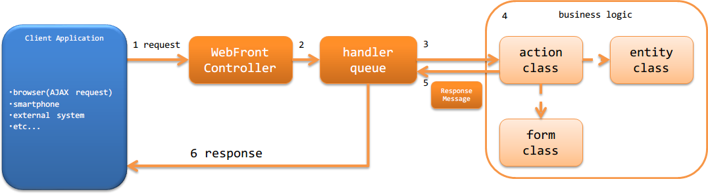

3.2.1. Architecture Overview¶
HTTP messaging provides a function to build a web service that processes http messages sent from outside (such as a browser or an external system).
Important
Use of RESTful web service instead of this function is recommended. For more information, see reason why RESTful web service is recommended .
3.2.1.1. Structure of HTTP messaging¶
It has the same structure as the Nablarch web application. For more information, see Structuring a web application.
3.2.1.2. Process flow of HTTP messaging¶
The process flow of HTTP messaging, from processing a request to returning a response, is shown below.
{kind=link}
- WebFrontController (implementation class of javax.servlet.Filter) receives a request.
- WebFrontController delegates the process for the request to a handler queue (handler queue).
- DispatchHandler configured in the handler queue specifies the action class to be processed based on the URI and adds it to the end of the handler queue.
- The action class executes business logic using a form class and an entity class.
For more information on each class, see Responsibility Assignment of the Application . - The action class creates and returns a ResponseMessage indicating the process result.
- HTTP Messaging Response Conversion Handler in the handler queue is converted into a response (such as json or xml) that is returned to the client, which is returned to the client.
3.2.1.3. Handlers used in HTTP messaging¶
Nablarch provides several handlers as standard, which are required to build web services using HTTP messaging. Build the handler queue in accordance with the requirements of the project (a custom handler will have to be created for the project depending on the requirements)
For details of each handler, refer to the link.
- Handlers that convert request and response
- Handler for filtering requests
- Handlers associated with database
- Error handling handler
- Other handlers
3.2.1.4. Minimum handler configuration for HTTP messaging¶
When building web services using HTTP messaging, the minimum required handler queue is as below: With this as the base, add standard handlers of Nablarch or custom handlers created in the project according to the project requirements.
| No. | Handler | Request process | Response process | Exception handling |
|---|---|---|---|---|
| 1 | Thread Context Variable Delete Handler | Deletes all the values configured on the thread local by the Thread Context Variable Management Handler . | ||
| 2 | Global Error Handler | Outputs the log for a runtime exception or error. | ||
| 3 | HTTP Response Handler | Performs any one of servlet forward, redirect, or response writing. | Displays the default error page in the case of a runtime exception or error. | |
| 4 | Thread Context Variable Management Handler | Initializes thread context variables such as request ID from the request information. | ||
| 5 | HTTP Messaging Error Control Handler | If the response body generated by the subsequent handler is empty, the default body corresponding to the status code is configured. | Log output and response according to the exception is generated. | |
| 6 | Request Dispatch Handler | Identifies the business action to be processed from the request path and adds it to the end of the handler queue. | ||
| 7 | HTTP Messaging Request Conversion Handler | Parses the body of the http request, creates RequestMessage , and passes it to the subsequent handler as a request object. | ||
| 8 | Database Connection Management Handler | Acquires DB connection. | Releases the DB connection. | |
| 9 | HTTP Messaging Response Conversion Handler | Generates HTTP response for an error based on the message for the error generated by the business action. | ||
| 10 | Transaction Control Handler | Begin a transaction. | Commits the transaction. | Rolls back a transaction. |
| 11 | HTTP Messaging Response Conversion Handler | Generates a response for HTTP based on the message generated by the business action. | Generates HTTP response for an error based on the exception thrown by the subsequent handler. |
3.2.1.5. Action used in HTTP messaging¶
Nablarch provides action classes as standard, which are required for building HTTP messaging. Click on the link for more information.